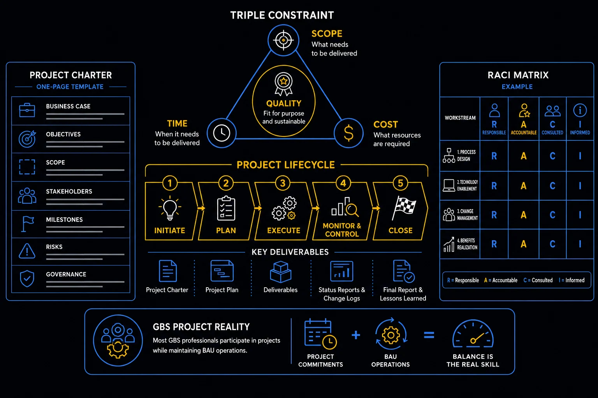

Pillar 8 · Cluster 1
Project management fundamentals for GBS
Understanding the boundary between BAU and projects, managing scope, and maintaining RAID logs are the baseline project management skills every GBS professional needs when transformation work begins.

triple constraint, project lifecycle, RACI matrix, project charter
Topic 01 · Definitions
Project vs BAU — defining the boundary
If everything is a project, nothing is a project. The distinction matters because projects have different governance, funding, and success criteria than ongoing operations.
Characteristics
- Ongoing, recurring work with no defined end date
- Success = consistency, SLA compliance, quality maintenance
- Funded through operating budget (Opex)
- Managed by team leads and process owners
Characteristics
- Temporary, unique work with defined start and end
- Success = delivering defined scope on time and budget
- Funded through project budget (may be Capex or Opex)
- Managed by project managers with dedicated governance
Triple constraint — scope, time, cost, quality
Topic 02 · Framework
The project lifecycle — initiation to closure
Every project follows the same fundamental arc: define what you are doing, plan how to do it, execute the plan, and close properly. Skipping phases creates downstream problems.
Initiation
Define the project purpose, scope boundaries, key stakeholders, and success criteria. Produce a project charter. Get formal approval to proceed.
Planning
Break down work (WBS), estimate effort and duration, identify dependencies, assign resources, and define the communication plan. Baseline the schedule and budget.
Execution
Deliver the work packages according to plan. Manage scope changes through formal change control. Track progress against baselines. Conduct regular status reporting.
Monitoring and Control
Compare actuals to plan. Manage RAID items. Escalate blockers. Adjust resource allocation. This runs in parallel with execution, not after it.
Closure
Formal acceptance of deliverables. Lessons learned documentation. Resource release. Handover to operations. Celebrate and recognize contributions.
Project lifecycle — initiate, plan, execute, monitor, close
Topic 03 · Control Mechanism
RAID logs — managing risks, assumptions, issues, dependencies
A RAID log is the single most important project management artifact. It is where you track everything that could go wrong, everything you are assuming, and everything you depend on.
- Risks — events that have not happened but could impact the project. Each risk needs a probability, impact rating, mitigation plan, and owner.
- Assumptions — things you believe to be true but have not confirmed. Unvalidated assumptions become risks. Validate early.
- Issues — problems that have already occurred and need resolution. Each issue needs an owner, target resolution date, and escalation path.
- Dependencies — external inputs or decisions your project depends on. Track the source, expected delivery date, and contingency if the dependency fails.
RACI matrix — responsible, accountable, consulted, informed
Topic 04 · Scope Control
Scope management — preventing creep
Scope creep is the leading cause of project failure in GBS. It happens when changes are accepted without assessing their impact on timeline, budget, and resources.
- Define scope in writing before execution begins — if it is not in the scope statement, it is not in scope
- Change control process — every scope change requires impact assessment (time, cost, risk) and formal approval before implementation
- Trace every deliverable to a requirement — if a deliverable cannot be traced to an approved requirement, it is scope creep
- Say no with evidence — "This change adds 3 weeks and $50K to the project" is more effective than "no"
- Distinguish scope change from scope clarification — clarifying an ambiguous requirement is not a change; adding a new requirement is
- The RACI matrix is the single most underused tool in GBS projects. Every time I see a project struggling with unclear ownership, missed handoffs, or duplicated effort, the root cause is the same: nobody defined who is Responsible and who is Accountable. One "A" per task — no exceptions.
- Project charters are not bureaucracy. A charter that takes 30 minutes to write saves 30 hours of scope creep arguments later. If your sponsor cannot articulate the problem, the success criteria, and what is out of scope in one page, the project is not ready to start.
Reference
Glossary
Full glossary at the GBS Insider Club Field Guide.
- PMI — A Guide to the Project Management Body of Knowledge (PMBOK), 7th Edition
- PRINCE2 — Managing Successful Projects methodology
- McKinsey — Delivering large-scale transformation programs, 2024
- Standish Group — CHAOS Report on project success rates, 2024
Knowing the frameworks is the entry ticket. Applying them — visibly, at your actual job — is what gets you promoted.
The GBS Insider Club Career Paths turn this theory into a guided 90-day program for your role: self-assessment, practical exercises, templates, and Julian's unfiltered practitioner playbook.
Explore the Career Paths → Back to Projects and Transformation